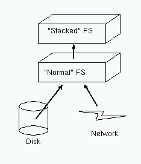

A stackable file system is a file system that doesn't communicate directly with a device such as a disk or a network interface. Instead, it will use another file system interface to handle all read/write/lookup requests.
The theory is a stackable file system can be used to provide incremental functionality to existing file systems, such as adding caching, transparent encryption, or (perhaps) compression.